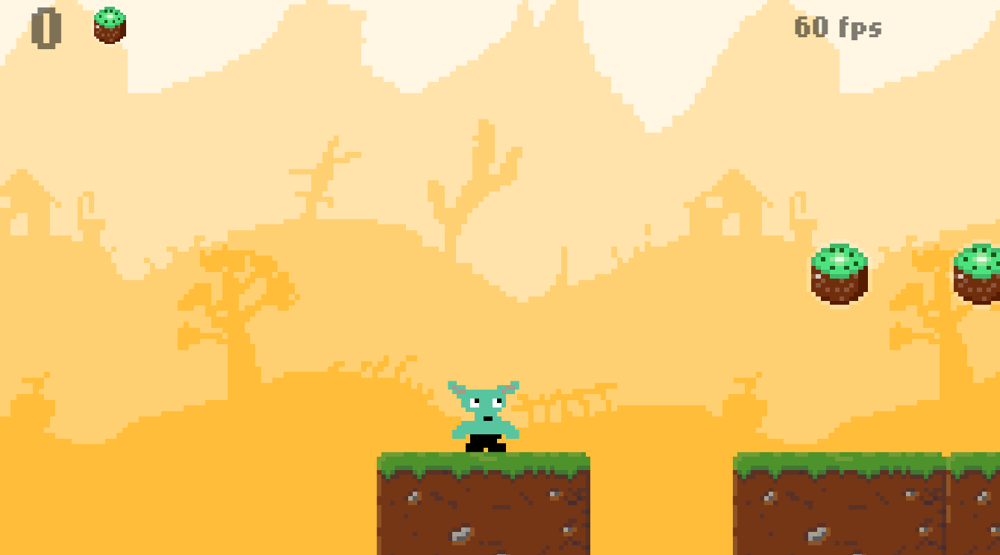

Aventuras en la Tierra Media es un juego de aventura que trata de un duende o hoobie que trata de explorar las increible tierra media donde va arecoger una serie de frutas en su camino pero cuidado ya que hay munchos enemigos que intentaran que no logre su cometido te atreves a intentarlo
Características destacadas:
El desarrollo de Aventuras en la Tierra Media se desarrollo gracias a micro studio que es un entorno de desarrolo donde se utiizan multiples lenguajes como javascript lua react y incluso ruby
Este juego no solo entretiene, sino que también permite a los jugadores desarrollar habilidades estratégicas y de trabajo en equipo. Enfréntate a desafíos únicos y mejora tus habilidades mientras te sumerges en una historia fascinante.
